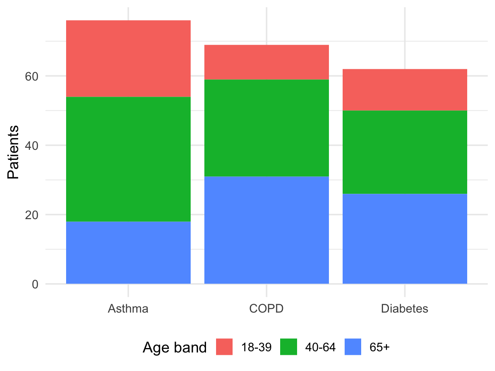

Start with a very simple workflow:
run-analysis.RNumber the folders and scripts if the order matters.
If the workflow gets larger, look at targets or Makefiles.
here() in run-analysis.Rlibrary(here)
source(here("01-cleaning", "01-import-survey.R"))
source(here("01-cleaning", "02-clean-survey.R"))
source(here("01-cleaning", "03-build-analysis-data.R"))
source(here("02-analysis", "01-descriptives.R"))
source(here("02-analysis", "02-subgroups.R"))
source(here("03-plots", "01-figures.R"))here() helps you build paths from the project root, so the same script is less likely to break when you move between computers or open the project from a different working directory.
Load packages inside the script that uses them, e.g. 02-analysis/01-descriptives.R starts with the library() calls needed for that analysis step.
tidylog: Stata-style feedbacktidylog prints short messages as you work through a pipeline.
Use regex when you care about a pattern rather than one exact value.
PT-00422026-03-23Think of regex as a compact language for describing text patterns.
stringrstr_detect() answers: “does this pattern appear?”str_extract() pulls out the matching textFor more practice, see the regex practical or try patterns at regex101.com.
For a stacked bar chart, your data should usually be in long format.
condition defines each barage_band defines the stacked piecesn gives the height of each piece| condition | age_band | n |
|---|---|---|
| Asthma | 18-39 | 22 |
| Asthma | 40-64 | 36 |
| Asthma | 65+ | 18 |
| COPD | 18-39 | 10 |
| COPD | 40-64 | 28 |
| COPD | 65+ | 31 |
| Diabetes | 18-39 | 12 |
| Diabetes | 40-64 | 24 |
| Diabetes | 65+ | 26 |
filter() are combined with ANDdplyr blog post for newer filtering functionality: dplyr 1.2.0lag()Sort first, then group by participant, then use lag() to refer to the previous observation in time.